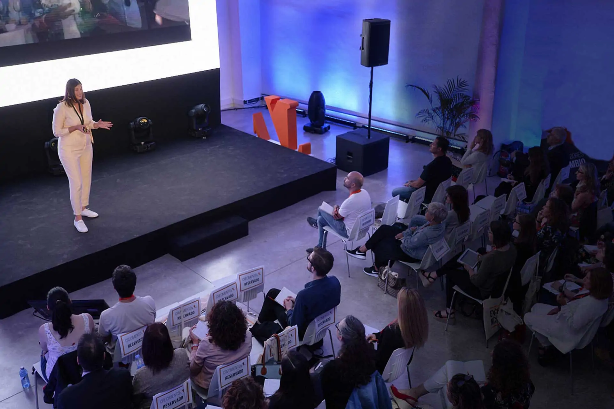
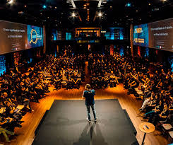
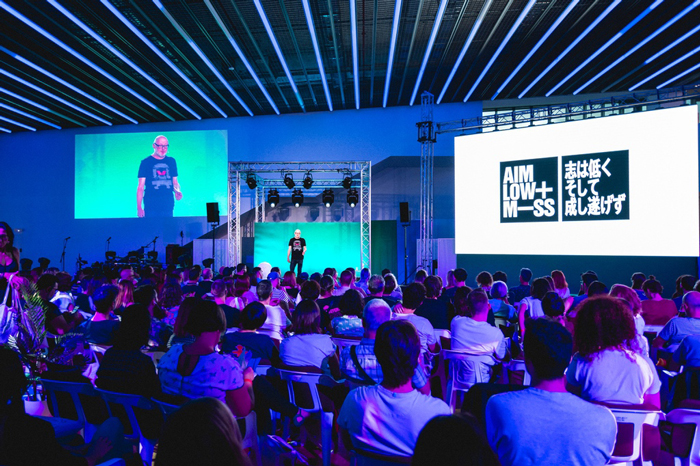
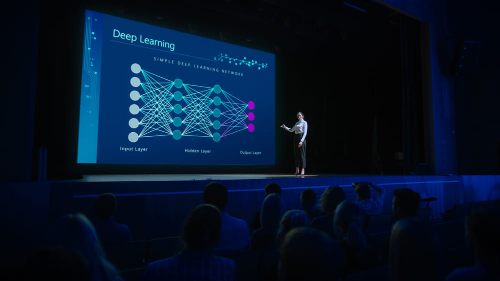
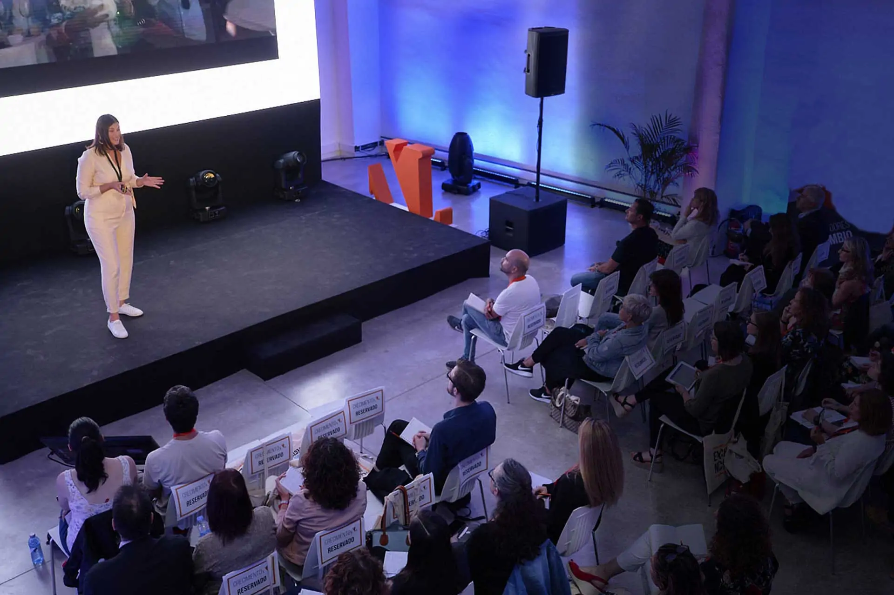
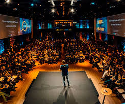
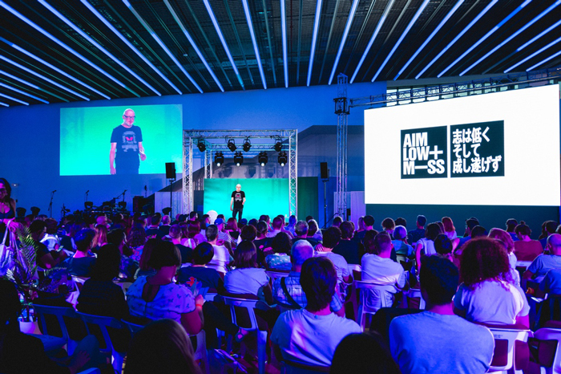
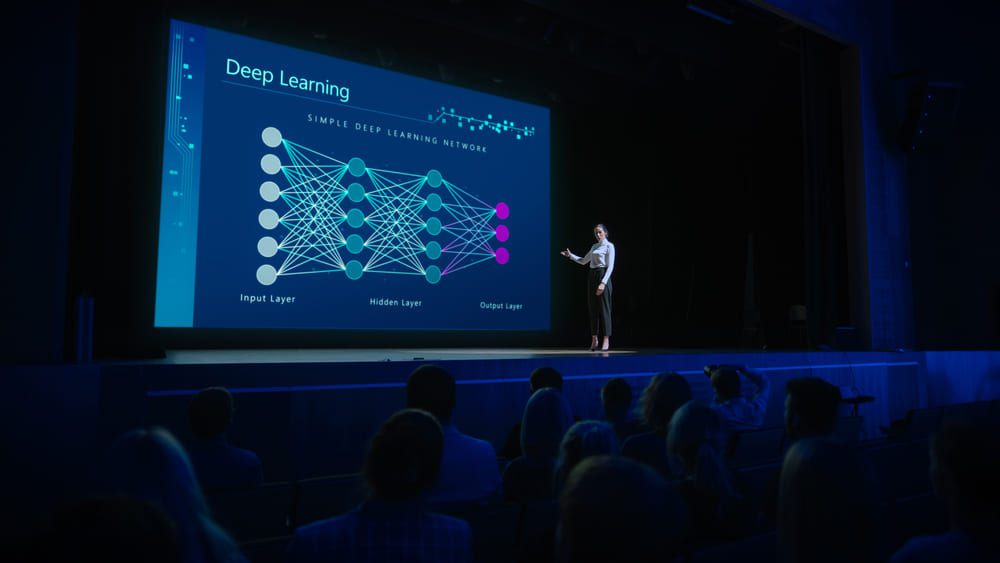

CONFERENCIA
13ª Conferencia Internacional sobre Coloides
9-12 Junio, 2024 | Sitges, Barcelona, España
Esta decimotercera edición de la serie ofrecerá instalaciones de clase mundial para que los asistentes intercambien nuevas
ideas, establezcan nuevas relaciones científicas y colaboraciones internacionales.
La ciencia de coloides e interfaces tiene una larga y orgullosa historia y una relevancia cada vez
mayor para nuevas direcciones en ciencias e ingeniería de materiales. Como tal, entre otras aplicaciones,
a ciencia de interfases y coloides facilita avances en nanociencia, ciencia de la materia blanda, catálisis,
nuevos desarrollos en eficiencia energética, generación y almacenamiento de energía, nanomedicina y administración
de fármacos, detección y diagnóstico, flujos multifásicos. y mojarse.
 






